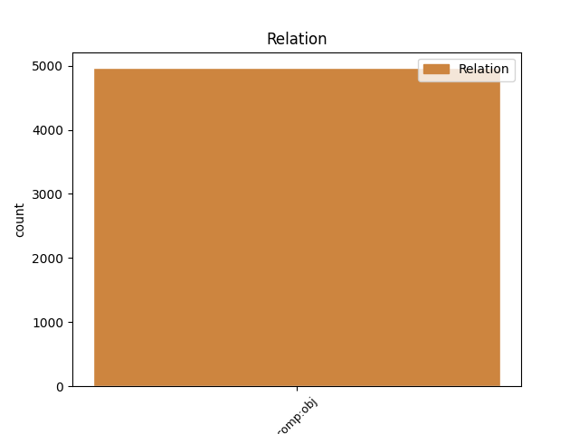
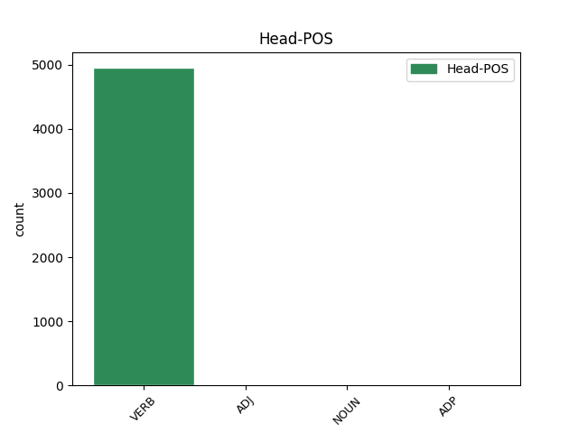
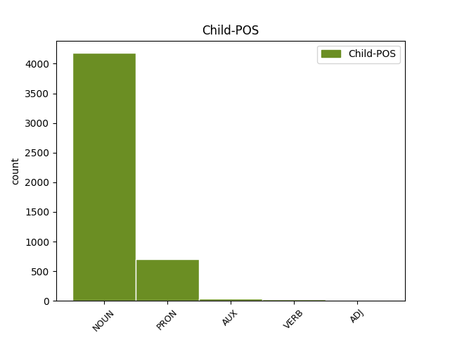

Distribution of features within this leaf



Agreement Rules sorted by frequency.
- When the dependent token is the direct object complements(comp:obj) of the head token,
1 Infatti _ _ _ _ 0 _ _ _
2 alcuni _ _ _ _ 0 _ _ _
3 esperti _ _ _ _ 0 _ _ _
4 hanno _ _ _ _ 0 _ _ _
5 organizzato organizzare VERB V Gender=Masc|Number=Sing|Tense=Past|VerbForm=Part 0 _ _ _
6 un _ _ _ _ 0 _ _ _
7 servizio servizio NOUN S Gender=Masc|Number=Sing 5 comp:obj _ _
8 di _ _ _ _ 0 _ _ _
9 trasporto _ _ _ _ 0 _ _ _
10 pubblico _ _ _ _ 0 _ _ _
11 con _ _ _ _ 0 _ _ _
12 le _ _ _ _ 0 _ _ _
13 barche _ _ _ _ 0 _ _ _
14 . _ _ _ _ 0 _ _ _
Disagree Examples:
1 una _ _ _ _ 0 _ _ _
2 sala _ _ _ _ 0 _ _ _
3 ha _ _ _ _ 0 _ _ _
4 dovuto _ _ _ _ 0 _ _ _
5 essere _ _ _ _ 0 _ _ _
6 sgomberata _ _ _ _ 0 _ _ _
7 per _ _ _ _ 0 _ _ _
8 una _ _ _ _ 0 _ _ _
9 fuga _ _ _ _ 0 _ _ _
10 di _ _ _ _ 0 _ _ _
11 gas _ _ _ _ 0 _ _ _
12 tossico _ _ _ _ 0 _ _ _
13 da _ _ _ _ 0 _ _ _
14 una _ _ _ _ 0 _ _ _
15 scultura _ _ _ _ 0 _ _ _
16 moderna _ _ _ _ 0 _ _ _
17 in _ _ _ _ 0 _ _ _
18 vetro _ _ _ _ 0 _ _ _
19 che _ _ _ _ 0 _ _ _
20 simboleggia simboleggiare VERB V Mood=Ind|Number=Sing|Person=3|Tense=Pres|VerbForm=Fin 0 _ _ _
21 " _ _ _ _ 0 _ _ _
22 i _ _ _ _ 0 _ _ _
23 pericoli pericolo NOUN S Gender=Masc|Number=Plur 20 comp:obj _ _
24 di _ _ _ _ 0 _ _ _
25 la _ _ _ _ 0 _ _ _
26 vita _ _ _ _ 0 _ _ _
27 " _ _ _ _ 0 _ _ _
28 . _ _ _ _ 0 _ _ _
1 Rilevata _ _ _ _ 0 _ _ _
2 la _ _ _ _ 0 _ _ _
3 presenza _ _ _ _ 0 _ _ _
4 di _ _ _ _ 0 _ _ _
5 gas _ _ _ _ 0 _ _ _
6 in _ _ _ _ 0 _ _ _
7 uno _ _ _ _ 0 _ _ _
8 di _ _ _ _ 0 _ _ _
9 i _ _ _ _ 0 _ _ _
10 tubi _ _ _ _ 0 _ _ _
11 trasparenti _ _ _ _ 0 _ _ _
12 che _ _ _ _ 0 _ _ _
13 compongono comporre VERB V Mood=Ind|Number=Plur|Person=3|Tense=Pres|VerbForm=Fin 0 _ _ _
14 l' _ _ _ _ 0 _ _ _
15 opera opera NOUN S Gender=Fem|Number=Sing 13 comp:obj _ SpaceAfter=No
16 , _ _ _ _ 0 _ _ _
17 i _ _ _ _ 0 _ _ _
18 guardiani _ _ _ _ 0 _ _ _
19 hanno _ _ _ _ 0 _ _ _
20 fatto _ _ _ _ 0 _ _ _
21 scattare _ _ _ _ 0 _ _ _
22 uno _ _ _ _ 0 _ _ _
23 speciale _ _ _ _ 0 _ _ _
24 piano _ _ _ _ 0 _ _ _
25 d' _ _ _ _ 0 _ _ _
26 emergenza _ _ _ _ 0 _ _ _
27 e _ _ _ _ 0 _ _ _
28 per _ _ _ _ 0 _ _ _
29 45 _ _ _ _ 0 _ _ _
30 minuti _ _ _ _ 0 _ _ _
31 i _ _ _ _ 0 _ _ _
32 pompieri _ _ _ _ 0 _ _ _
33 hanno _ _ _ _ 0 _ _ _
34 isolato _ _ _ _ 0 _ _ _
35 la _ _ _ _ 0 _ _ _
36 sala _ _ _ _ 0 _ _ _
37 . _ _ _ _ 0 _ _ _
1 Per _ _ _ _ 0 _ _ _
2 tutta _ _ _ _ 0 _ _ _
3 la _ _ _ _ 0 _ _ _
4 giornata _ _ _ _ 0 _ _ _
5 i _ _ _ _ 0 _ _ _
6 carabinieri _ _ _ _ 0 _ _ _
7 hanno _ _ _ _ 0 _ _ _
8 controllato controllare VERB V Gender=Masc|Number=Sing|Tense=Past|VerbForm=Part 0 _ _ _
9 decine decina NOUN S Gender=Fem|Number=Plur 8 comp:obj _ _
10 di _ _ _ _ 0 _ _ _
11 persone _ _ _ _ 0 _ _ _
12 , _ _ _ _ 0 _ _ _
13 tra _ _ _ _ 0 _ _ _
14 cui _ _ _ _ 0 _ _ _
15 i _ _ _ _ 0 _ _ _
16 cinque _ _ _ _ 0 _ _ _
17 utilizzatori _ _ _ _ 0 _ _ _
18 di _ _ _ _ 0 _ _ _
19 il _ _ _ _ 0 _ _ _
20 box _ _ _ _ 0 _ _ _
21 dove _ _ _ _ 0 _ _ _
22 sarebbe _ _ _ _ 0 _ _ _
23 avvenuta _ _ _ _ 0 _ _ _
24 la _ _ _ _ 0 _ _ _
25 violenza _ _ _ _ 0 _ _ _
26 : _ _ _ _ 0 _ _ _
1 BOLZANO _ _ _ _ 0 _ _ _
2 - _ _ _ _ 0 _ _ _
3 Un _ _ _ _ 0 _ _ _
4 fulmine _ _ _ _ 0 _ _ _
5 ha _ _ _ _ 0 _ _ _
6 ucciso uccidere VERB V Gender=Masc|Number=Sing|Tense=Past|VerbForm=Part 0 _ _ _
7 ieri _ _ _ _ 0 _ _ _
8 tre _ _ _ _ 0 _ _ _
9 alpinisti alpinista NOUN S Gender=Masc|Number=Plur 6 comp:obj _ _
10 su _ _ _ _ 0 _ _ _
11 il _ _ _ _ 0 _ _ _
12 Sassolungo _ _ _ _ 0 _ _ _
13 , _ _ _ _ 0 _ _ _
14 in _ _ _ _ 0 _ _ _
15 Alto _ _ _ _ 0 _ _ _
16 Adige _ _ _ _ 0 _ _ _
17 . _ _ _ _ 0 _ _ _
1 La _ _ _ _ 0 _ _ _
2 prima _ _ _ _ 0 _ _ _
3 domenica _ _ _ _ 0 _ _ _
4 d' _ _ _ _ 0 _ _ _
5 agosto _ _ _ _ 0 _ _ _
6 ha _ _ _ _ 0 _ _ _
7 fatto fare VERB V Gender=Masc|Number=Sing|Tense=Past|VerbForm=Part 0 _ _ _
8 vittime vittima NOUN S Gender=Fem|Number=Plur 7 comp:obj _ _
9 anche _ _ _ _ 0 _ _ _
10 a _ _ _ _ 0 _ _ _
11 il _ _ _ _ 0 _ _ _
12 mare _ _ _ _ 0 _ _ _
13 e _ _ _ _ 0 _ _ _
14 su _ _ _ _ 0 _ _ _
15 le _ _ _ _ 0 _ _ _
16 strade _ _ _ _ 0 _ _ _
17 . _ _ _ _ 0 _ _ _